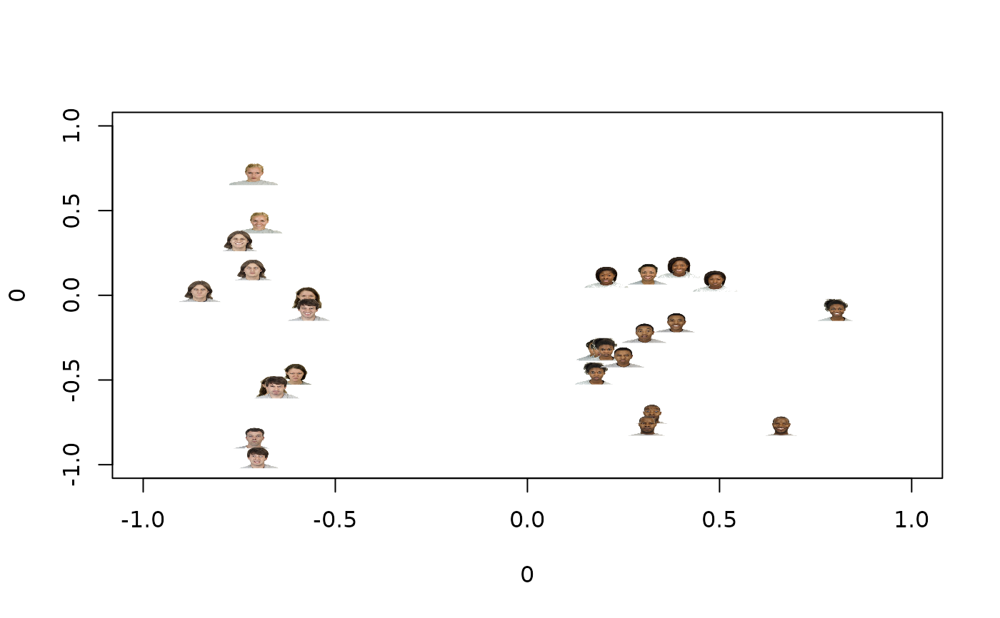
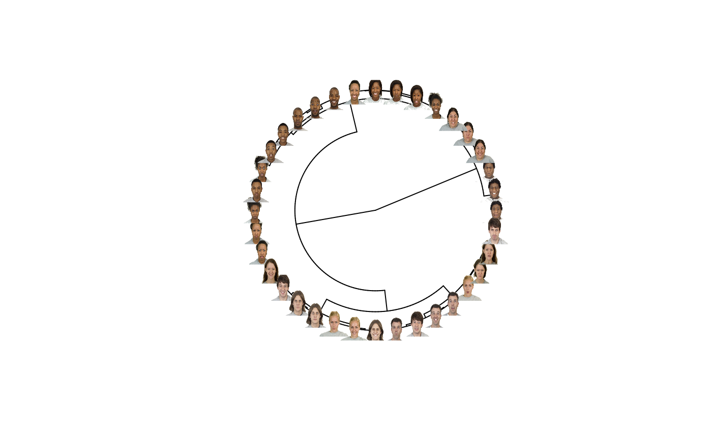

Plot pictures in a scatterplot
plot_pics.RdThis function plots a list of PNG or raster images as the points in a scatterplot.
Arguments
- md
Matrix of data indicating where each image is to be plotted.
- plist
List of PNG or raster images
- x
Which column of the matrix should be used for x-axis position
- y
Which column of the matrix should be used for y-axis position
- pr
Proportion of items to be plotted OR vector indicating which items should be plotted.
- pc
If images are rasters, what color should they be plotted in?
- psize
Plot size for each image as proportion of plotting surface
- newplot
Should a new plot be generated? If FALSE images added to current plot.
- ...
Other graphical parameters
Details
The number of rows in the data matrix must be equal to the length of the list containing the images to be plotted. Each row corresponds to one image; thus the first image in the list will be plotted at the coordinates in row 1 of the data matrix.
When newplot=FALSE the images will be added as points to the existing plot.
When used with get.tip.coords this can add images to the tips of phylogram
plots, an effective way to visualize structure in embeddings with more than
two or three dimensions.
When there are many images, they often clutter the plot, making it hard to see
structure. You can control the proportion of images shown by setting pr to a
value smaller than 1.0. In this case, a random sample of impages will be plotted.
If images are line-drawings and are loaded as rasters rather than PNGs, setting
the plot color pc will control the color the image is displayed in. This can
be specified as a single value for all images or as a vector of colors; if a vector
each element sets the plot color for one image. This can be useful for displaying
other data in the plot, such as the gender of the participant who produced the
drawing.
Examples
#Plot a 2D embedding as a scatterplot using images instead of points:
emb <- cfd_embeddings[[1]] #Get embedding from first participant
plot_pics(emb, cfd_pics, psize = 0.03)

#Plot the same data as a hierarchical cluster plot with images as leaves.
hc <- stats::hclust(dist(emb), method = "ward.D")
pt <- ape::as.phylo(hc)
plot(pt, type = "fan", show.tip.label=FALSE)
tip_coords <- get.tip.coords()
plot_pics(tip_coords, cfd_pics, newplot = FALSE)
